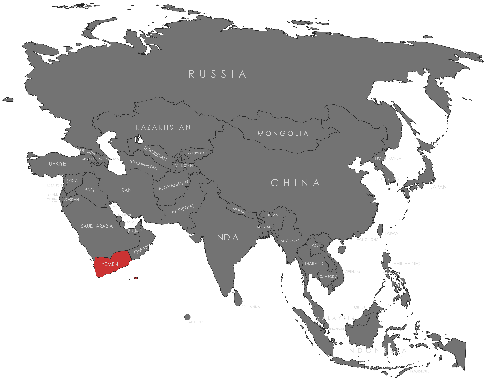

Specifications
- Local Name: اليمن (Al-Yaman)
- Proportion: 2:3
- Name of the Flag: Flag of Yemen
- Adopted: May 22, 1990 (upon unification of North and South Yemen)
Symbolism
- Red: The blood of martyrs and the struggle for freedom
- White: Hope for a peaceful future
- Black: The dark past and hardships endured by the nation
- Horizontal tricolor based on the Arab Liberation colors, symbolizing unity with the Arab world
Colors:
Shapes / Symbols:
Meaning / Special Display
- Used during national unity events to commemorate the merging of North and South Yemen.
- Displayed during revolutionary anniversaries highlighting Yemen’s struggle against colonialism and civil conflict.
Description
- The flag reflects Yemen’s identity as part of the Arab world and its ongoing hope for peace and unity.
- For citizens, it represents resilience, national pride, and aspirations for a stable and united country.

Return to Gallery